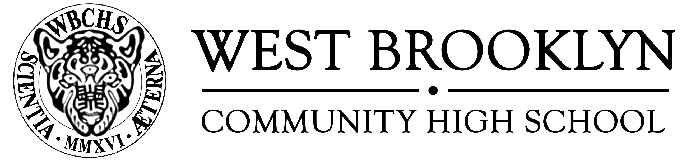

West Brooklyn Community High School is a small transfer school serving 200 overage and under-credited youth. The school provides opportunities for young people to explore their leadership potential. The foundation of our learning community is a partnership between Good Shepherd Services and the Department of Education, as well as students, families, and community-based organizations. Our school fully integrates a rigorous academic plan with a youth development model to address student needs. Our small learning environment creates opportunities for students to achieve their personal and academic goals in order to succeed in their post-secondary endeavors.
WBCHS focuses on providing students, ages 16-20, who have become excessively truant or have dropped out of high school, the opportunity to reengage in school and graduate with a high school diploma.
Each student is supported in this process by an Advocate Counselor who works with students to create a plan for graduation as well as for post-secondary opportunities. Our small classroom size and student-centered instruction works to create an individualized learning environment for each student.